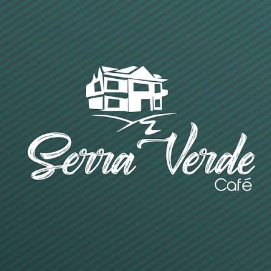
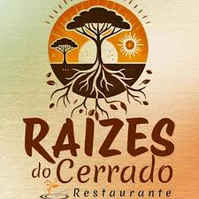

Para oferecer produtos e serviços de qualidade, contamos com uma rede de parceiros que compartilha dos nossos valores e do nosso compromisso com a culinária do Centro-Oeste. Nossas parcerias são fundamentais para garantir ingredientes selecionados, produtos de qualidade e o cuidado necessário em todas as etapas do nosso trabalho.
Trabalhamos em conjunto com produtores rurais, fornecedores de alimentos, pequenos produtores, artesãos e empresas locais que contribuem para valorizar os ingredientes e a cultura gastronômica da região. Damos preferência a parceiros que prezam pela qualidade, responsabilidade e valorização da produção regional. Também buscamos estabelecer parcerias com empresas e profissionais da área de eventos, como organizadores, espaços para festas, decoradores e serviços de apoio. Essa colaboração nos permite oferecer soluções mais completas aos nossos clientes, tornando cada evento uma experiência especial. Acreditamos que bons resultados são construídos por meio da união. Por isso, valorizamos cada parceiro que faz parte da nossa trajetória e contribui para que os sabores e tradições do Centro-Oeste cheguem a mais pessoas. Juntos, fortalecemos a economia local, valorizamos nossa cultura e construímos experiências gastronômicas cada vez melhores.|
 Café Serra Verde |
|
 Cooperativa Raízes do Cerrado |
Para mais informações, Contate-nos.